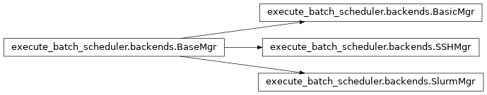

execute_batch_scheduler.backends module¶
Different workload manager interface for cell execution magics.
List of defined class:
BaseMgr: Abstract class for functionnal specificationsBasicMgr: Simple bash execution (testing purposes). One should use%%script bashor%%bashmagics insteadSSHMgr: Execute cell content through SSH on a distant machine.SlurmMgr: Execute cell content as a Slurm job
-
class
execute_batch_scheduler.backends.BaseMgr(args, shell)¶ Bases:
objectAbstract base class for description of workload manager interface.
Any derived class must implement the init function, how to submit a cell, how to monitor job progression and how to get output from execution.
Methods
get_output()Get the job output and error. submit(content)Submission of the cell content to the workload manager. wait_progress()Interact with workload manager to notify job progression and states. -
__init__(args, shell)¶ Initialize the workload manager interface.
Derived class should instanciate a
subprocess.Popenobject to interact with.Parameters: args : str
String containing workload scheduler specific arguments.
shell : str
Shell to use whithin the workload scheduler
-
get_output()¶ Get the job output and error.
Returns: stdout: str
Job standard output
stderr: str
Job standard errput
-
submit(content)¶ Submission of the cell content to the workload manager.
Use a
subprocess.Popeninstance to comunicate cell content.Parameters: content: str
IPython cell content.
-
wait_progress()¶ Interact with workload manager to notify job progression and states.
-
-
class
execute_batch_scheduler.backends.BasicMgr(args, shell)¶ Bases:
execute_batch_scheduler.backends.BaseMgrBasic backend.
Use a simple bash execution for testing purposes. This is not a replacement of the builtin IPython
%%bashmagicsMethods
get_output()Skip ouptut. submit(content)Submit the cell content to the Popen instance. wait_progress()Skip progression. -
__init__(args, shell)¶ Initialize the default manager
-
get_output()¶ Skip ouptut. Cell output already displayed on submit
-
submit(content)¶ Submit the cell content to the Popen instance. Return the output and error.
-
wait_progress()¶ Skip progression. Cell already executed on submit.
-
-
class
execute_batch_scheduler.backends.SSHMgr(args, shell)¶ Bases:
execute_batch_scheduler.backends.BaseMgrSSH based manager.
Reach a distant machine through SSH to execute cell content as a script. SSH is running in batch mode without standard input interaction with user, so it must connect without password or passphrase.
Methods
get_output()Get job output submit(content)Submit the cell content to the Popen instance. wait_progress([silent])Wait for progression. -
__init__(args, shell)¶ Initialize the workload manager interface for SSH.
It rely on
ssh -nso ssh must connect without any password and passphrase. The ssh command is achieved through asubprocess.PopenobjectParameters: args : str
String containing workload scheduler specific arguments.
shell : str
Shell to use whithin the workload scheduler
-
get_output()¶ Get job output
Returns: stdout: str
Job standard output
stderr: str
Job standard errput
-
submit(content)¶ Submit the cell content to the Popen instance.
Parameters: content: str
IPython cell content.
-
wait_progress(silent=False)¶ Wait for progression.
Parameters: slient : bool (default=False)
Display or not a progression state.
-
-
class
execute_batch_scheduler.backends.SlurmMgr(args, shell)¶ Bases:
execute_batch_scheduler.backends.BaseMgrSlurm workload manager.
It enforces the slurm standard output and error files to be read and display in Cell output after completion.
Slurm output and error files are stored in
$HOME/python-execute-slurm.${SLURM_JOB_ID}.[out|err].Todo
Add a way to change out/err slurm files location.
Methods
get_output()Get the job output and error. submit(content)Submission of the cell content to the workload manager. wait_progress([silent])Interact with workload manager to notify job -
__init__(args, shell)¶ Initialize the slurm submission.
The
sbatchcommand is achieved through asubprocess.PopenobjectParameters: args : str
String containing workload scheduler specific arguments.
shell : str
Shell to use whithin the workload scheduler
-
get_output()¶ Get the job output and error.
Read slurm standard and output files.
Returns: stdout: str
Job standard output read from slurm output file.
stderr: str
Job standard errput read from slurm error file.
-
submit(content)¶ Submission of the cell content to the workload manager.
Use a Popen instance. Return the output and error of submission.
Parameters: content: str
IPython cell content.
Returns: stdout: str
Submission command standard output.
stderr: str
Submission command standard errput.
-
wait_progress(silent=False)¶ Interact with workload manager to notify job progression and states
Parameters: slient : bool (default=False)
Display or not a progression state.
-